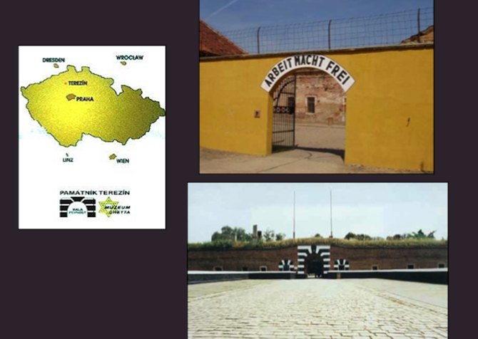
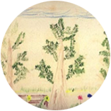

Terezín era un gueto y campo de concentración. Cuando Hana y George llegaron fueron separados y allí permanecieron durante casi dos años.

Fotos del Campo de Terezín

Dibujo de Hana
Por el campo de Terezín pasaron más de 15 mil niños.
Hana dormía en un edificio de 10 habitaciones. En cada una de ellas dormían veinte niñas sobre colchones de arpillera rellenos de paja.
Nunca había suficiente espacio, ni suficiente comida, ni la oportunidad de un momento privado. Estaba lleno de gente, infinidad de insectos y ratas y una gran cantidad de nazis que patrullaban el campo imponiendo una disciplina cruel.
Con George lograron encontrarse una vez por semana a escondidas.
Además del trabajo diario que todos debían hacer, se dictaban clases secretas en el sótano del edificio.
Hana dibujaba.
Estos son algunos de sus dibujos que sobrevivieron a la guerra.